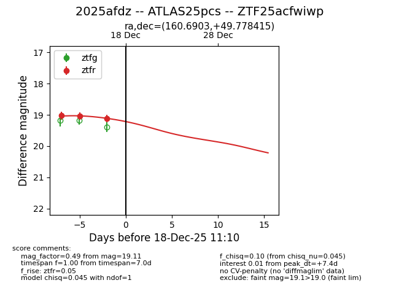
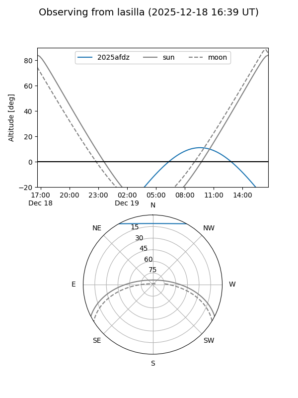
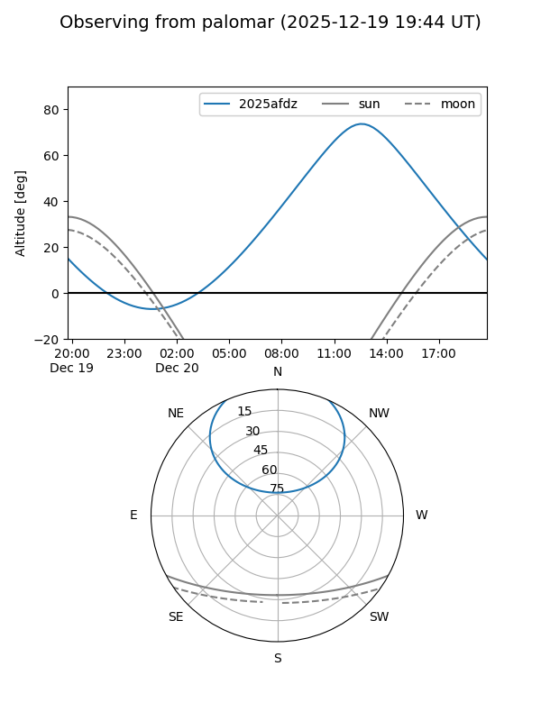
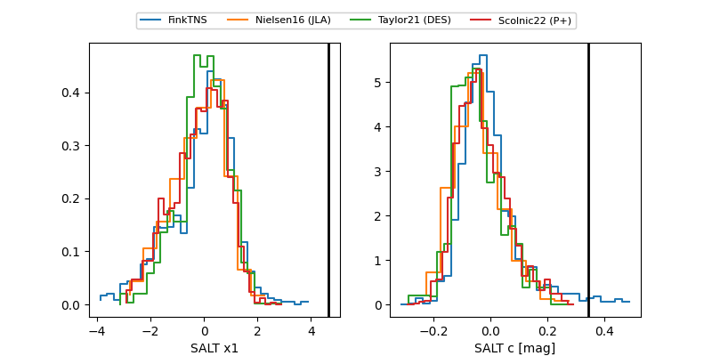

2025afdz
Target 2025afdz at 2025-12-18 13:12
Aliases and brokers:
FINK: fink-portal.org/ZTF25acfwiwp
Lasair: lasair-ztf.lsst.ac.uk/objects/ZTF25acfwiwp
ALeRCE: alerce.online/object/ZTF25acfwiwp
TNS: wis-tns.org/object/2025afdz
YSE: ziggy.ucolick.org/yse/transient_detail/2025afdz
alt names
ZTF25acfwiwp (ztf,fink_ztf)
2025afdz (tns,yse)
ATLAS25pcs (atlas)
Coordinates:
equatorial (ra, dec) = 160.6903,+49.77841
equatorial (HMS+DMS) = 10:42:45.67,+49:46:42.29
galactic (l, b) = (161.5562,+56.57882)
Photometry
last ztfr=19.11
4 ztfr detections
Lightcurve

Visibility


Additional plots
